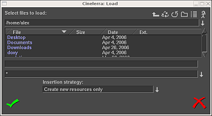

| [ << ] | [ >> ] | [Top] | [Contents] | [Index] | [ ? ] |
Here are most of the supported file formats that can be loaded and rendered to,
with notes regarding their compression. You may be able to load other formats not
described here.
The format of the file affects what Cinelerra does with it. Edit decision
lists stored in XML save the project settings. Formats which contain media but
no edit decisions just add data to the tracks. If your project sample rate is
48 kHz and you load a sound file with 96khz, you will still be playing it at 48 kHz.
If you load an EDL file at 96khz and the current project sample rate is 48 kHz,
you will change it to 96 kHz.
Some file formats are very slow to display on the timeline. These usually have
video which is highly compressed. Drawing highly compressed video thumbnails
on the timeline (picons) can be very slow. Disable picon drawing for these files
with the draw media toggle in the patchbay to speed up operations.
Supported file formats that Cinelerra can import and export are currently:
Quicktime is not the standard for UNIX but we use it because it is well
documented. All of the Quicktime movies on the internet are compressed.
Cinelerra supports some compressed Quicktime movies. If Cinelerra
crashes when loading a Quicktime movie, it is most likely because the format
was not supported.
Quicktime is a container for two streams, a video stream and an audio stream. These
streams are compressed using separate encoding schemes. The preferred encoding for
Quicktime output is MPEG-4 Video and MPEG-4 Audio. This format is compatible in the
commercial players for Windows, has good compression quality and good output quality.
For better compression, use H-264 video. Unfortunately H-264 decoding is so slow it can
not play very large frame sizes.
Cinelerra supports two non-standard codecs: Dual MPEG-4 video and Dual H.264
video. These will not play in anything but Cinelerra and XMovie. They are
designed for movies where the frames have been divided into two fields, each
field displayed sequentially. The dual codecs interleave two video streams to
improve efficiency without requiring major changes to the player.
This is the same as Quicktime with MPEG-4 Audio as the audio codec.
You can load still images on video tracks just like you do for any video file.
Supported file formats are mainly: PNG, TIF, TGA or JPG, EXR, raw digital camera images.
When loaded on the timeline, by default the image takes up one frame in length.
To view the image, zoom in time (down arrow) on the timeline so you can
see the single frame.
To extend the length of the image, drag its boundaries just as you would do with
regular video media.
You can drag the boundaries of a still image as much as you want.
Images in Cinelerra have the ability to be dragged to an infinite length.
Cinelerra lets you define the initial duration of the loaded images. The parameter
is set in the Images section of the Settings->Preferences->Recording window.
Unless your original material comes from a digital source (like a digital photo
camera), the first thing you have to do before you can use it is to somehow
capture the assets into a usable digital medium.
For old photos, paper maps, drawings or diagrams, you might have to scan
them into a file format like PNG, TIF, TGA or JPG files by using a digital scanner.
You might want to use Gimp to post-process the images, clean damaged areas or color
correct the assets.
If your assets come from a digital source like a digital camera or a screen
capture, be sure to capture the material using the best resolution possible.
This will allow you to get the best quality output from your Cinelerra project.
Rendering a video to a single image causes the final image file to be overwritten for every timeline position. The rendered file is a single still image of the last frame of the video. No table of contents is created. See section Images sequence.
Imported images always stay at their original size. Therefore,
you may need to scale your pictures before importing them in Cinelerra.
For resizing your picture to fit the project size you can use Imagemagick
(http://www.imagemagick.org/script/index.php)
Example:
convert inputfile.jpg -resize 720x576 outputfile.jpg
You have to take into account the aspect ratio of your video.
For example, PAL images aspect ratio is 4/3, but 720x576 is 5/4. For your
imported images to be displayed correctly, you have to rescale their horizontal
size:
new horizontal size=(5 / 4) / (4 / 3) x original horizontal size
For PAL videos, you have to multiply the horizontal size of the pictures you
want to import by a factor of 0.9375.
Here is a small shell script which, when ran from a folder containing jpg
images, resize those images and put the new images in a `resized' folder:
Note: Make sure you have installed Imagemagick which provides the functions
'identify' and 'convert' used in the script.
#/bin/sh
mkdir resized
for element in `ls . | grep -i '\.jpe*g$\'`;
do
size=`identify ${element}`
width=`echo ${size} | sed '+s+.*JPEG ++' | sed '+s+x.*++'`
height=`echo ${size} | sed '+s+.*JPEG [0-9]*x++' | sed '+s+DirectClass.*++'`
let new_width=${width}*9375/10000
convert -resize "${new_width}x${height}!" -quality 100 ${element} resized/${element}
done
When the size of your image is different from the size of your project, but the ratio is the same, you might want to keep the image at its original size, to load it on a dedicated track and adjust the display of it with the camera zoom. See section The camera and projector.
You may not know about Open EXR. This format stores floating point RGB images. It also supports a small amount of compression.
Projects which render to EXR should be in a floating point color model to take advantage
of the benefits of EXR. See section Project attributes.
Several compression options are available for EXR.
Select Use Alpha if the project colormodel has an alpha channel and you want to retain it in the file. Otherwise the primary colors are multiplied by the alpha channel.
RAW digital camera images are a special kind of image file that Cinelerra only
imports.
Once they are on the timeline, these must be processed in a floating
point color space.
Raw images from Canon cameras are the only ones tested. They
need to have the Gamma effect applied to correct gamma. Because raw images
take a long time to interpolate, they are usually viewed first in a proxy file
and then touched up.
First apply the Gamma effect to a track of raw images and set it to automatic with 0.6 gamma. Then render the timeline to a Quicktime JPEG file. Append the Quicktime JPEG file in a new track and disable playback of the old track. Now the gamma corrected copy of each raw image can be previewed relatively fast in the same timeline position as the original image.
An images sequence is a series of ordered still pictures (e.g. the frames of an animated scene). They can be loaded as multiple files.
An image sequence can be represented in Cinelerra also by an image list file, called also Table Of Contents file (TOC). A TOC is a text file with a specific format containing absolute paths to every frame in the sequence plus additional information like image resolution, file format and sequence frame rate. To get better performance, the table of contents can be loaded as a single asset instead of the individual images. A TOC is not a media file but it behaves like a video clip.
Cinelerra creates TOC files by rendering to "Images sequence".
When rendering a video to an images sequence Cinelerra creates a different image file
for every timeline position and generates a TOC for this images sequence. This is
useful to split video into frames as single stills.
When rendering a series of stills to an images sequence Cinelerra generates a TOC for the images
sequence but also creates a different image file for every still. The source files
are copied and renamed. The TOC file contains the paths to the new files. This
is useful only when you want to create a list and change the format of your source
files.
For creating a TOC file without creating new image files you can use external
list generators like IMG2LIST 0.1.5. (by Claudio "malefico" ANDAUR) or
Seven Gnomes (by Peter SEMILETOV). See
http://cinelerra-cv.org/user-tips.php.
Cinelerra can create TOCs with the following formats: JPEG, PNG, EXR, TIFF,
TGA.
Images lists can be edited manually.
Because AVI (Audio-Video Interleave) is so fragmented with varied audio and video codecs, you may not be able to play all AVI formatted files.
MPEG files containing video can be loaded directly into Cinelerra. If the file
is supported, a table of contents is built. If the file is unsupported, it
usually crashes or shows very short tracks. Unfortunately, this method of
loading MPEG files is not good enough if you intend to use the files in a
renderfarm.
To use MPEG files in a renderfarm, you need to run mpeg3toc in order to generate a table
of contents for the file and then load the table of contents. mpeg3toc needs the
absolute path of the MPEG file. If you do not use an absolute path, it assumes that
the MPEG file is in the same directory that Cinelerra is run from.
MPEG streams are structured into multiple tracks. Each track can be video or
audio. Each audio track can have 1-6 channels. Cinelerra converts each
channel of audio into a track.
Notes on mpeg video encoding:
MPEG video encoding is done separately from MPEG audio encoding. In MPEG video
there are two colormodels. The YUV 4:2:0 colormodel is encoded by a highly
optimized version of mpeg2enc with presets for standard consumer electronics.
In the process of optimizing mpeg2enc, they got rid of YUV 4:2:2 encoding. The
YUV 4:2:2 colormodel is encoded by a less optimized version of mpeg2enc.
YUV 4:2:2 encoding was kept around because the NTSC version of DV video loses
too much quality when transferred to YUV 4:2:0. This DV video must be
transferred to YUV 4:2:2.
When encoding YUV 4:2:0, the bitrate parameter changes meaning depending on
whether the bitrate or quantization is fixed. If the bitrate is fixed, it is
the target bitrate. If the quantization is fixed, it is the maximum bitrate
allowed. This is a quirk of the mpeg2enc version.
DVD are split into a number of programs, each identified by a unique
`IFO' file. If you want to load a DVD, find the corresponding `IFO'
file for the program of interest. Load the IFO file directly and a table of
contents will be built. Alternatively for renderfarm usage, a table of
contents can be created separately.
Run: mpeg3toc -v /cdrom/video_ts/vts_01_0.ifo dvd.toc
or something similar. Then load `dvd.toc'.
MPEG 1 audio files have .mp2 and .mp3 extension. If the files are encoded using a
fixed bitrate, they can be loaded directly on Cinelerra. Otherwise a table of
contents (TOC) needs to be created and loaded as resources in place of the audio file.
If you know your audio stream has variable bitrate or if you see Cinelerra can't
seek and playback your file properly, you must create the TOC using mpeg3toc.
Here is an example of command:
mpeg3toc -v /path/to/myfile.mp3 myfile.toc
`myfile.toc' is the Table of Contents that can be loaded as resource.
The path should be absolute unless you plan to always keep your .xml in the same
directory as the filename. For renderfarms the filesystem prefix should be / and the
movie directory mounted under the same directory on each node.
The OGG format is an antiquated but supposedly patent-free way of compressing audio and video. The quality is not as good as H.264 or MPEG-4 Audio. In reality, anyone with enough money and desire can find a patent violation so the justification for OGG is questionable.
Edit decision lists are generated by Cinelerra for storing projects. EDL files end in .xml. When loaded, they change the attributes of the current project. Because edit decision lists consist of text, they can be edited in a text editor.
FIXME
FIXME
FIXME
FIXME
All data that you work with in Cinelerra is acquired either by recording
from a device or by loading from disk. This section describes loading.
The loading and playing of files is just as you would expect. Just go to
file->Load Files, select a file for loading, and click ok. Depending on
the setting of the Insertion Strategy list box, your file will be either loaded
on the Resources Media window or directly on the Program window. In this last
case, click the forward play button and it should start playing, regardless of
whether a progress bar has appeared.

The Load window
If the file is a still image, the project's attributes are not changed and the first frame of the track becomes the image. If the file has audio, Cinelerra may build an index file in order to speed up drawing. You can edit and play the file while the index file is being built.
Usually, three things happen when you load a file:
However, Cinelerra lets you change what happens when you load a file.
In the Load dialog window go to the Insertion strategy box and select one of
the options of the drop down menu.
Each of these options loads the file a different way.
Using these options, you can almost do all your editing by loading files.
The insertion strategy is a recurring option in many of Cinelerra's functions.
In each place the options do the same thing.
If you load files by passing command line arguments to Cinelerra, the files are
loaded with Replace current project rules.
In the Load dialog go to the list of files. Select a file. Go to
another file and select it while holding down CTRL. This selects one
additional file. Go to another file and select it while holding down
SHIFT. This selects every intervening file. This behavior is available
in most list box.
Use this method and the Concatenate to existing tracks insertion strategy
to create an images slideshow or a song playlist.
Another way to load files is to pass the filenames as arguments on the command line.
cinelerra myvideo.mov myothervideo.mov
This starts the program with all the arguments loaded and creates new tracks for every file.
If there are too many files in your media directory, it can be difficult to
find the file you want. For this purpose, the Load
window allows you to filter which files are displayed in the list box by extension name.
Click the dropdown box (right below the file name text box)
and select the file extension of your media (i.e. mpg,
mov, mp3, avi, etc). The file list now shows only files with the selected
extension.
If you can not load a particular kind of video clip and do not have the original source file, you will have to convert it to a format supported by Cinelerra. To convert your file to mpeg2 is a good solution, since Cinelerra load that format without any problem. In that case, you should use ffmpeg to do the convertion. However, the mpeg2 formats requires the video to have specific image size and framerates:
For input files which do not have those properties, you should use mencoder to
convert to MPEG4. You can identify the codecs and container of any video by
running the following command:
mplayer -identify <your_video_file.xyz>
ffmpeg -sameq -i original_video.xyz converted_video.mpegmencoder original_video.xyz -ovc lavc -lavcopts vcodec=mpeg4:\vhq:vbitrate=6000 -oac mp3lame -lameopts br=256:vol=1 \-ffourcc DIVX -o converted_video.avi
There is one special XML file on disk at all times. After every editing
operation, Cinelerra saves the current project to a backup in
`$HOME/.bcast/backup.xml'. In the event of a crash, the first thing you should do
after restarting Cinelerra is select File->Load backup in order to load the backup.
This will start Cinelerra at the point in your editing operations directly before the program
crashed.
It is important after a crash to restart Cinelerra without performing any editing operations
as you will overwrite the backup.
Note that the backup.xml file is always an only file, also
when you are working with two instances of Cinelerra open at the same time.
In this case, the last operation made in whatever instance will overwrite the backup.
Cinelerra saves projects as XML files. Go to File->Save. Select a file to overwrite or enter a new file. Cinelerra automatically concatenates `.xml' to the filename if no `.xml' extension is given.
When Cinelerra saves a file, it saves an edit decision list (EDL) of the current project but does not save any media. The saved file consists of text. It contains all the project settings and locations of every edit. Instead of media, the file contains pointers to the original media files on disk. For each media file, the XML file stores either an absolute path or just the relative path. If the media is in the same directory as the XML file, a relative path is saved. If it is in a different directory, an absolute path is saved.
You have to be careful when moving files around: you risk to break the media
linkages.
You can keep the media and the XML file in the same directory forever
and freely move the whole directory, since relative paths are saved.
Alternatively you can save the XML file in a different directory than the media
but you can't move the media ever again. In this case you can freely move your
XML file around, since absolute paths are saved.
If you saved your XML file in the same directory of your media but you
would like to move your project to another location, you can change the paths from
relative to absolute by going to File->Save as... and entering the new
location.
Similarly if you saved your project outside your media directory but you would
like to move your media to another location, you can change the paths from
absolute to relative by going to File->Save as... and saving your XML file in the
same directory of the media.
If you want to create an audio playlist and burn it on a CD-ROM, save
the XML file in the same directory as the audio files and burn the entire
directory. This keeps the media paths relative.
It must be said that since an XML file is a text file, you can always repair broken
media linkage by editing the XML file in a text editor. For every media you
moved, search for the old path and replace it with the new one. Don't forget to
make a backup copy of your XML file before doing any editing!
You can replace the path of every asset whose source file you moved also within the
program, by entering the new location in the Asset info window.
To open this window, right click on the asset in the Resources window and choose
Info... in the popup menu. Directly type the path in the first field of the
dialog or click on the magnifier on the right to browse your files.
Operating from the GUI is convenient only when a very small number of changes is needed.
XML files are useful in saving the current state of Cinelerra before retiring
from an editing session.
XML files are specific to Cinelerra only. You can not play XML files in a
dedicated movie player.
Real-time effects in an XML file have to be re-synthesized every time you play
it back.
The XML file also requires you to maintain copies of all the source assets on
hard disk, which can take up space and cost a lot of electricity to spin.
Render your projects to a final format for more persistent storage of the output.
To merge several separate projects into one big one :
| [ << ] | [ >> ] | [Top] | [Contents] | [Index] | [ ? ] |
This document was generated on February, 11 2016 using texi2html 1.76.